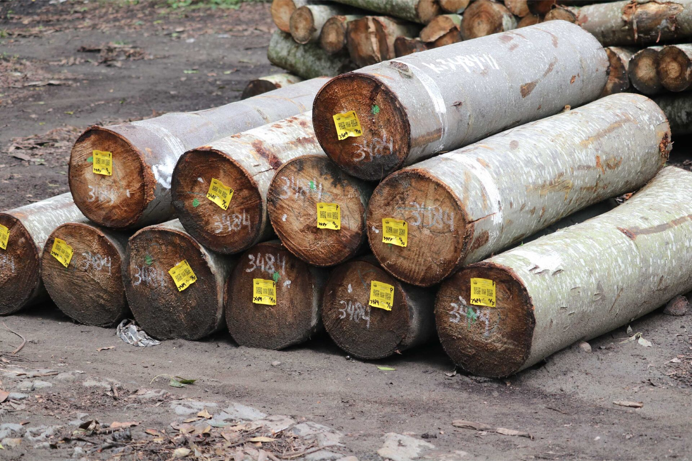
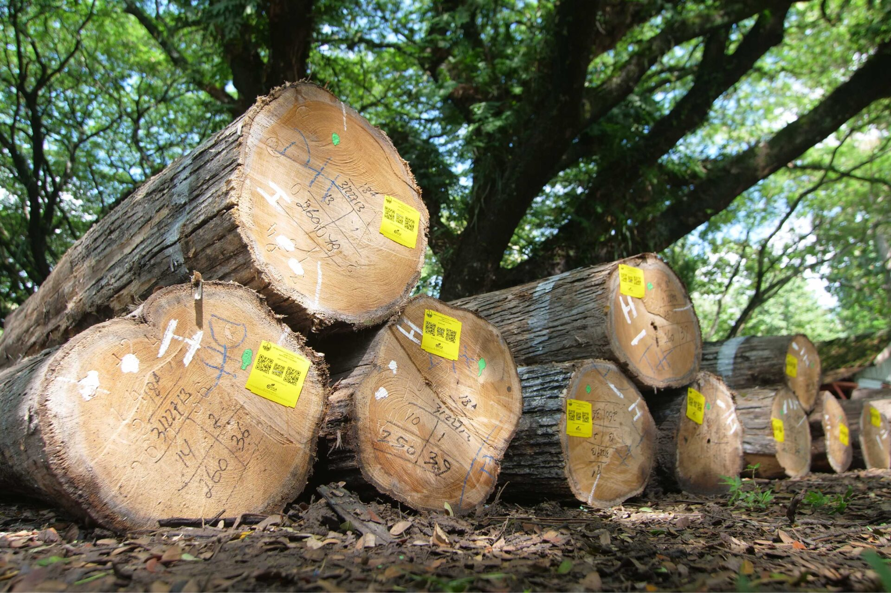
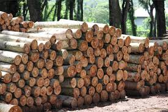
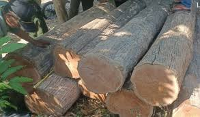
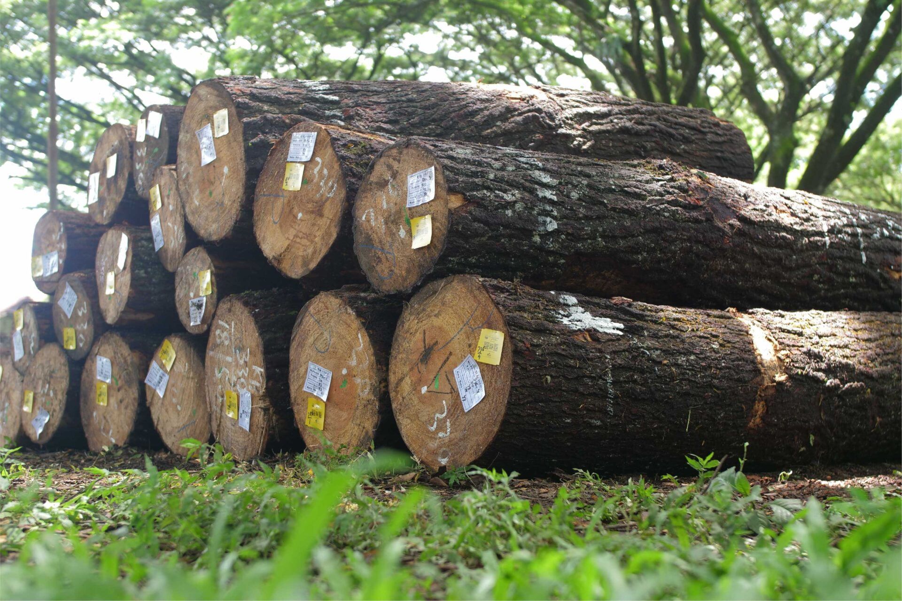
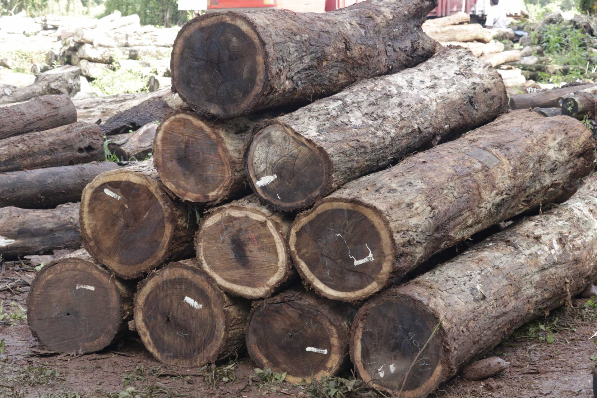

Kayu
Produk Kayu Berkualitas Tinggi dari Hutan Lestari
Perhutani menyediakan berbagai produk hasil hutan kayu pilihan seperti Kayu Jati dan Mahoni berkualitas tinggi yang legal, tersertifikasi, serta dikelola secara lestari.

Kayu BalsaCiri Anatomi:
Balsa merupakan jenis tanaman cepat tumbuh dan bernilai ekonomi tinggi. Pohon balsa memiliki banyak keunikan, di mana salah satunya adalah proses tumbuh yang berjalan cepat, yakni sekitar lima tahun saja untuk bisa tumbuh setinggi 20 meter.
Sifat Kayu Balsa:
Salah satu keunggulan kayu balsa yang paling terkenal adalah bobotnya yang ringan dan berbeda dengan jenis bahan kayu hmr.Kayu balsa memiliki karakter berupa sel besar serta dinding tipis, bahkan hanya sekitar 40% dari potongan kayu balsa yang merupakan material padat. Berat Jenis: 90 – 220 kg/m3 dengan MC 12%. Kelas Awet: II – III , Kelas Kuat: V
Kegunaan:
Dikarenakan kayu balsa memiliki tingkat kepadatan yang rendah serta berbobot ringan, maka material yang satu ini pun sangat mudah dibentuk untuk dijadikan bahan utama dari pembuatan berbagai jenis perabotan rumah tangga seperti sandaran kursi makan.Namun, terdapat hal menarik lain di mana kayu balsa juga dapat menyerap getaran ataupun guncangan sehingga lebih mudah untuk dipotong serta direkatkan.Adapun, tingkat kepadatan kayu balsa saat ini terbagi menjadi tiga kategori, yaitu:
– Kayu balsa ringan berbobot di bawah 120 kg per m³ untuk penggunaan hobi serta aeromodelling.
– Kayu balsa sedang berbobot 120 kg hingga 180 kg per m³ untuk penggunaan industri komposit.
– Kayu balsa berat berbobot di atas 180 kg per m³ untuk penggunaan yang lebih luas.

Kayu JatiCiri Umum :
Warna : teras berwarna kuning emas kecoklatan sampai coklat kemerahan, mudah dibedakan dari gubal yang berwarna putih agak ke abu abuan. Corak: Dekoratif yang indah berkat jelasnya lingkaran tumbuh, sedikit buram dan berminyak. Tekstur: agak kasar sampai kasar dan tidak rata.
Ciri Anatomi:
Pembuluh/Pori : tata lingkar, bentuk bundar sampai bundar telur, diameter tangensial bagian kayu awal sekitar 340-370 mikron, pada kayu akhirya sekitar 50-290 mikron, bidang perforasi sederhana, berisi tilosis atau endapan berwarna putih.
Sifat dan Kegunaan:
Berat Jenis: rata-rata 0,67 (0,62 – 0,75); Kelas awet: I-II; Kelas Kuat: II; Kegunaan: dipakai untuk berbagai keperluan, antara lain bahan bangunan, rangka pintu dan jendela, panel pintu, bantalan kereta api, perabot rumah tangga, karoseri badan truk, dek kapal, lumber sering, vinir indah.
Nama Lain:
Deleg, dodolan, jate, jateh, jatih, jatos, kulidawa

Kayu MahoniMorfologi dan penyebaran
Mahoni termasuk pohon besar dengan tinggi pohon mencapai 35–40 m dan diameter mencapai 125 cm. Batang lurus berbentuk silindris dan tidak berbanir. Kulit luar berwarna cokelat kehitaman, beralur dangkal seperti sisik, sedangkan kulit batang berwarna abu-abu dan halus ketika masih muda, berubah menjadi cokelat tua, beralur dan mengelupas setelah tua.
Manfaat
Buah mahoni untuk pengobatan
Pohon mahoni bisa mengurangi polusi udara sekitar 47% – 69% sehingga disebut sebagai pohon pelindung sekaligus filter udara dan daerah tangkapan air.
Mahoni sebagai peneduh jalan. Bagi penduduk Indonesia khususnya Jawa, tanaman ini bukanlah tanaman yang baru, karena sejak zaman penjajahan Belanda mahoni dan rekannya, Pohon Asam, sudah banyak ditanam di pinggir jalan.
Syarat Tum
Mahoni dapat tumbuh dengan subur di pasir payau dekat dengan pantai dan menyukai tempat yang cukup sinar matahari langsung.
Kegunaan Kayu Mahoni
Kayu mahoni untuk furniture Jepara sudah lama dipakai sebagai bahan baku utama furniture jepara selain kayu jati.
Kelebihan Kayu Mahoni
1. Serat kayu halus dan beragam. Penampilan yang seperti ini sangat bagus jika difinishing dengan warna-warna natural atau klasik.
2. Penampang kayu yang sangat stabil, kayu mahoni dikenal untuk kekuatan penyusutan dan perubahan bentuk

Kayu MerbauPengenalan Merbau atau ipil adalah nama sejenis pohon penghasil kayu keras berkualitas tinggi anggota famili Fabaceae (Leguminosae). Karena kekerasannya, di wilayah Maluku dan Papua barat kayu ini juga dinamai kayu besi.
Sifatayu teras berwarna kelabu coklat atau kuning coklat sampai coklat merah cerah atau hampir hitam. Kayu gubal berwarna kuning pucat sampai kuning muda, jelas dibedakan dari kayu teras. Merbau memiliki tekstur kayu yang kasar dan merata, dengan arah serat yang kebanyakan lurus. Kayu yang telah diolah memiliki permukaan yang licin dan mengkilap indah.
Manfaat Merbau terutama dimanfaatkan kayunya, yang biasa digunakan dalam konstruksi berat seperti balok-balok, tiang dan bantalan pada bangunan rumah maupun jembatan.

Kayu PinusTerdapat lebih dari 20 jenis kayu pinus dengan nama species yang berbeda. Jenis kayu pinus yang sering digunakan dan secara umum dikenal memiliki kualitas yang baik ada 2 jenis kayu pinus yaitu Pinus Radiata dan Pinus Merkusii. PINUS RADIATA (Radiata Pine) Area Tumbuh: Australia (740 ribu hektar), Chili (sekitar 1,3 juta hektar), Selandia Baru (1,2 juta hektar), Afrika Selatan dan Amerika. Hutan paling besar untuk kayu ini diketahui adalah dari Chili. Beberapa eksporter juga berasal dari Selandia Baru namun tidak murni plantation. Biasanya Selandia Baru mengekspor kayu ini sudah dalam bentuk S2S atau S4S. Pohon: Antara 15 – 25 tahun kayu Pinus Radiata bisa memiliki diameter batang 30 – 80 cm dan tinggi antara 15 – 30 meter. Pinus Radiata termasuk jenis pohon yang cepat tumbuh dan berbatang lurus. Warna Kayu: Kayu teras berwarna merah kecoklatan dan kayu gubal berwarna kuning dan krem. Garis lingkaran tahun pinus radiata lumayan jelas terlihat sehingga garis serat kayu pada pembelahan tangensial bisa terlihat jelas pula. Densitas: 480 – 520 kg/m3 pada MC 12% Serat kayu: Cenderung lurus tapi terdapat banyak mata kayu karena pohon pinus radiata memiliki banyak cabang kecil pada batangnya.

Kayu SonokelingCiri Umum :
Warna: teras berwarna kecoklatan dengan garis-garis berwarna agak hitam, gubal berwarna putih keabu-abuan. Corak: permukaan bercorak indah berkat adanya garis yang berlainan warnanya. Tekstur: hampir halus.
Ciri Anatomi:
Pembuluh/Pori: baur, soliter dan sebagian berganda radial yang terdiri dari atas 2-3 pori, jumlah sekitar 5-8 per mm2, diameter tangensial sekitar 80-175 mikron, beidang perforasi sederhana, berisi endapan berwarna merah kecoklatan.
Sifat dan Kegunaan:
Berat Jenis: kayu berat sedang sampai berat, dengan berat jenis rata-rata 0,83 (0,77-0,86); Kelas Awet: I; kelas kuat: II. kegunaan: bahan perabot rumah tangga kelas tinggi, vinir indah, rangka pintu dan jendela, alat musik, barang ukiran, kayu perpatungan, barang yang perlu dilengkungkan.
Nama Lain:
Angsana brits, sonosungu (jawa).
Jenis yang mirip:
Sonosiso (Dalbergia sissoides)
Dilengkapi sertifikasi resmi pengelolaan hutan lestari (SVLK).
Berasal dari pohon pilihan dengan usia tebang matang.
Sistem tebang-tanam kembali untuk kelestarian alam.
Menjadi mitra utama industri perkayuan nasional dan global.